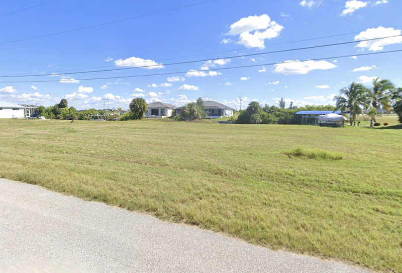
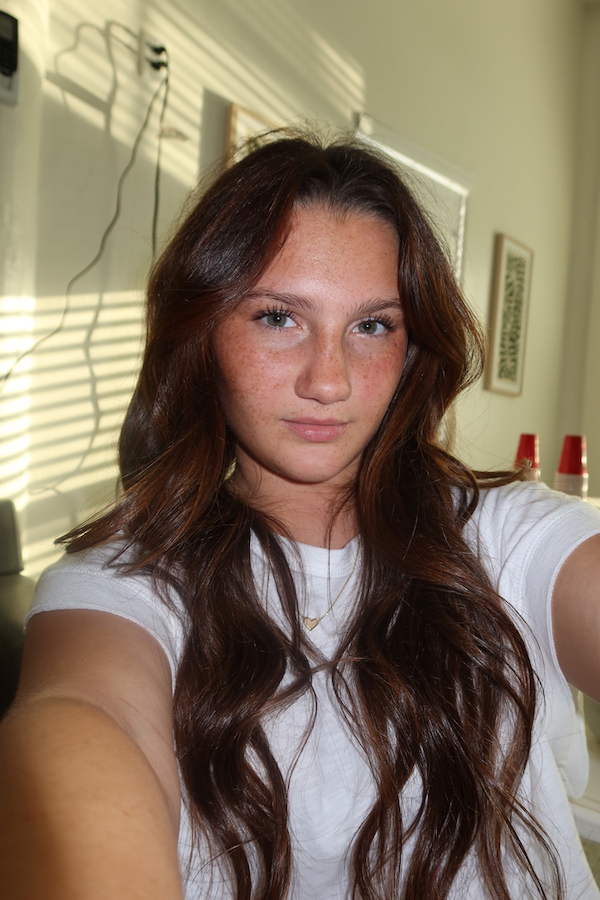
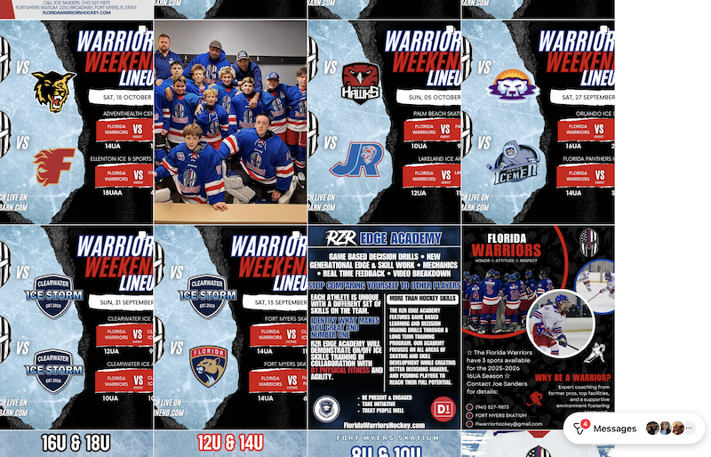

SWFL Residential Development
Houses soon to be or currently being developed in Southwest Florida under my Residential Contractor License.
I’m a sophomore at NYU Stern studying Business, Technology, and Entrepreneurship, with a planned minor in Business Entertainment, Media, and Technology. I want to bring the entrepreneurial skills and mindset I’m absorbing into the entertainment industry, a field I’ve always been interested in.

A portfolio shaped by business, creativity, leadership, construction, social media, and a growing interest in entertainment and media.


I’ve lived in Greenwich Village as a full-time student for an entire school year now, but before that, I lived in Cape Coral, Florida all my life. Being in New York has expanded how I think about business, creativity, opportunity, and the entertainment industry.
My interest in entrepreneurship comes from watching my parents’ drive, the businesses they built from the ground up, and their energy to take on new things every day.
I’ve taken on leadership roles including NHS Vice President, French NHS Historian, choreographer for fundraising and school spirit events, and dancer in productions.
Last year, I successfully became the youngest Residential Contractor in the state of Florida and also passed the General Contractor Exam. I also market and creatively direct Instagram content for my dad’s hockey organization.
Current work across residential development, AI-based play, and social media creative direction.

Houses soon to be or currently being developed in Southwest Florida under my Residential Contractor License.
Hackathon project and flight simulator contestant utilizing AI for data collection, player insights, and a more purposeful gaming experience.

Facebook and Instagram content I post and creatively direct for my dad’s hockey organization, @fl_warriors_hockey.
A mix of creative, business, leadership, and hands-on entrepreneurial experience.
Open to opportunities and conversations across entrepreneurship, entertainment, media, creative strategy, business development, and technology.